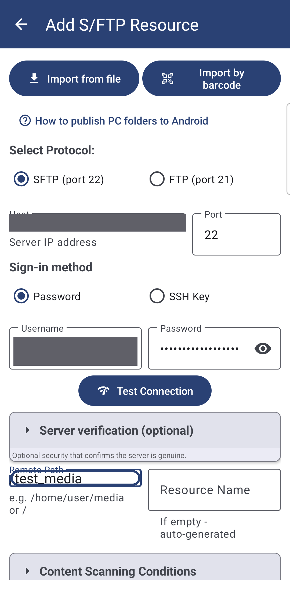
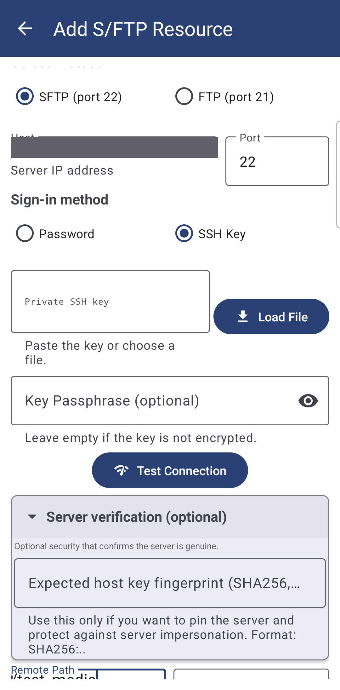
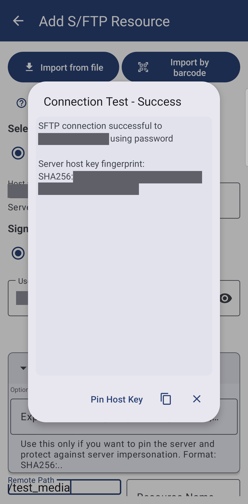

Connecting SFTP and FTP Servers
Add an FTP or SFTP server by address, sign in with a password or an SSH key, let the app confirm the server's identity once and re-check it on every visit, and hand a folder to someone else - or receive one from them - as a single shared file. Testing the same kind of resource from a paired watch is covered too.
Why You'll Love This
A home NAS with SMB turned off, a server that only opens once you are outside your own house, a friend's computer whose folder they want to hand you without reading out a password over the phone - these are jobs for FTP or SFTP rather than SMB. Unlike a shared Windows folder, an FTP or SFTP server is reached by its address from anywhere, which is exactly what makes it worth setting up carefully: with SFTP, the app can also confirm it is still talking to the same server every single time, not just the first.
If you have not decided between SMB and SFTP yet, Connecting SMB/Windows shares has a short comparison at the end.
- ✓ FastMediaSorter in any edition except Lite - see The seven editions.
- ✓ The server's address and port, and either a user name with a password or an SSH key.
- ✓ For key sign-in: the private key file, and its passphrase if it has one.
- ✓ To share or import access to a folder: any app that can send a file, such as Telegram or email.
Add a server by address
On the main screen tap Add, then SFTP / FTP - the Add S/FTP Resource screen opens. Under Select Protocol: choose SFTP (port 22) or FTP (port 21); the Port field fills itself in, with a hint of "SFTP: 22, FTP: 21" if you change your mind. Enter the Host (the server's address) - the field itself explains it wants a "Server IP address", though a domain name works too.
SFTP encrypts the whole conversation; plain FTP does not, so pick FTP only when a server does not offer SFTP at all.

Sign in with a password or an SSH key
Under Sign-in method choose Password or SSH Key. Password sign-in just needs Username and Password, the same as any other account.
For SSH Key, paste the key into Private SSH key or tap Load File to pick the file from storage, and fill in Key Passphrase (optional) if the key itself is encrypted - leave it empty otherwise. A key that will not parse says "Invalid SSH private key format" right away, before you waste a connection attempt on it. If your device already came with some server folders pre-configured through a bundled setup file, those can use a key the same way, with nothing left for you to type.

Test the connection, and let the app remember this server
Tap Test Connection. The first time an SFTP server answers, its identity is worth pinning: open Server verification (optional) - "Optional security that confirms the server is genuine" - where the app can show "Server host key fingerprint:
This step is optional by design - most people can skip it and just add the resource - but it is the one thing that turns "probably the right server" into "definitely the right server."

Every SFTP server has its own private identity key, and the fingerprint is a short code computed from it. Pinning it is like remembering a face instead of just a name - if someone else's server later answers under the same address, the fingerprint gives it away.
The server's identity is checked every time, not just once
A pinned host key is verified on every connection this resource makes from then on - browsing, thumbnails, playback and its reconnects alike, not only when you press Test Connection. If a server ever answers with a different key than the one you pinned, the app refuses it outright: "This shared folder's server looks different from the one you paired with. Nothing was loaded, to keep you safe." That is what a genuine man-in-the-middle attempt looks like from the inside, and it is also exactly what happens, harmlessly, if a server was reinstalled and issued itself a new key - re-pin it once you are sure it is really the same place.
A few things the app handles quietly
- A folder scan that cannot finish says so. Scanning an SFTP folder ends in bounded time even when the network changes mid-scan or a connection goes half-open - "The folder is taking too long to load. Check your network and try again." instead of a spinner that never stops.
- A server that was just unreachable is not retried the hard way every time. For a short cooldown after a failed connection, the app answers fast instead of making every thumbnail or file wait through a full connection timeout again.
What You Get
A server you reach by address - on your own network or anywhere on the internet - opens with a password or a key, its identity is confirmed once and checked on every visit after that, and handing someone else access to a folder, or receiving access to theirs, is one shared file away.
Tips and Troubleshooting
- Not sure whether you need SMB or SFTP? Connecting SMB/Windows shares compares the two from a user's point of view.
- Want the phone to be the server instead? See Turning the phone into an SFTP server.
- Testing an SFTP or FTP resource from your watch? The watch's own Test button really connects and reports the server's actual reason on failure - see Opening the phone's and network folders on the watch.
- Everything in one move to a new phone. Resources added here, including keys and pinned fingerprints, travel in the same backup as the rest of your resources - see Sharing and backing up your resources.